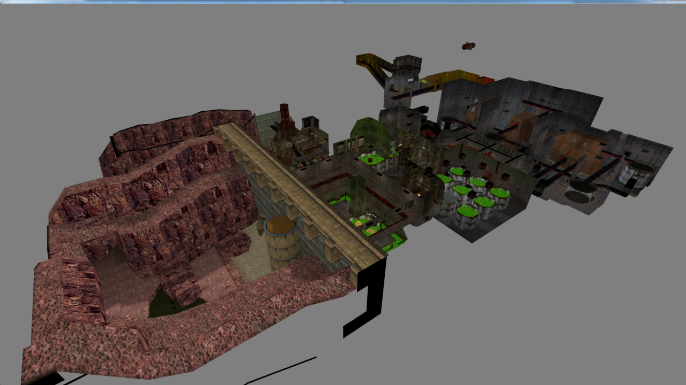

02/28/16 15:40:43 ¶ ● ⬈  goldsourcegold: Residue Processing from Half-Life by Valve Chapter view created with Halfmapper - Full Size https://github.com/gzalo/HalfMapper http://gzalo.com/halfmapper_en/